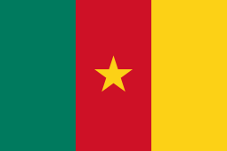

Alemanha,
Arábia Saudita,
Argentina,
Austrália,
Bélgica,
Brasil,
Camarões,
Canadá,
Catar,
Coreia do Sul,
Costa Rica,
Croácia,
Dinamarca,
Equador,
Espanha,
Estados Unidos,
França,
Gana,
Holanda,
Inglaterra,
Irã,
Japão,
Marrocos,
México,
País de Gales,
Polônia,
Portugal,
Senegal,
Sérvia,
Suíça,
Tunísia e
Uruguai.